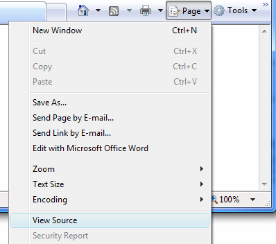

Crearea unei pagini web goale
Pentru a crea o pagina web goala parcurgem pasii urmatori:
1)Se deschide editorul de texte Notepad parcurgand calea Start, All Programs, Accesories,
Notepad.
2)Se editeaza structura paginii web, ca in imaginea de mai jos:
3)Se salveaza fisierul (File, Save As...) ca fisier html, fapt pentru care in caseta
File Name (Nume Fisier)
se editeaza numele si extensia intre ghilimele. Daca nu am proceda asa, fisierul ar fi salvat
ca fisier text iar browserul nu ar sti sa il citeasca.
Click pe butonul Save pentru a salva fisierul. Dupa salvare el va apare ca un fisier HTML!
4)Se deschide pagina web prin duclu-click pe numele ei in dosarul in care a fost salvat.
Evident, va fi o pagina goala deoarece in sectiunea corpului de pagina nu este nimic editat.
De remarcat este faptul ca in bara de titlu a browserului este afisat numele fisierului
deoarece in zona de titlu nu era nimic editat!
5)Modificarea codului sursa al paginii web
Pentru a accesa codul sursa al paginii web si a opera modificari ale codului sunt descrise mai jos
doua metode:
a)Metoda 1
Se da dublu-click pe pictograma fisierului HTML pentru a deschide pagina web in browser.
Click apoi pe sageata din dreapta butonului Page din bara de instrumente a browserului
si se selecteaza optiunea View Source (Vizualizare Sursa).

Ca urmare se deschide cu Notepad codul sursa al sablonului. Vom opera o modificare, editand
intre etichetele de inceput si de sfarsit de titlu, ca in figura urmatoare:
Se salveaza modificarea apasand combinatia de taste Ctrl si S sau, deschizand meniul File si
selectand apoi optiunea Save.
Se minimizeaza fereastra Notepad pe bara de lucrari Windows ;i se reincarca fisierul
Sablon.html prin click pe butonul Refresh (Reincarcare) din dreapta barei de adrese a
browserului.

In bara de titlu a browserului
va aparea tot ceea ce am scris in sectiunea de titlu din codul sursa
al paginii web.
b)Metoda 2
Pentru modificari in codul sursa al paginii web se mai poate proceda si dand click-dreapta
pe numele fisierului html si alegand optiunea Open With (Deschidere Cu) iar din noua fereastra
ce se deschide dand click pe Notepad. Se deschide cu Notepad fisierul, se efectueaza modificarile,
se salveaza fisierul si apoi se inchide. Pentru a vedea pagina modificata se da dublu-click pe numele
fisierului iar browserul va afisa pagina modificata.
Recomandare
Este mult mai practic sa ai permanent deschise atat pagina web cat si fisierul sursa, astfel ca dupa
fiecare modificare sa poti vizualiza efectul prin click pe Refresh (F5) in fereastra browserului.
Intre cele doua ferestre se comuta foarte usor, prin click pe fisier in bara de lucrari.